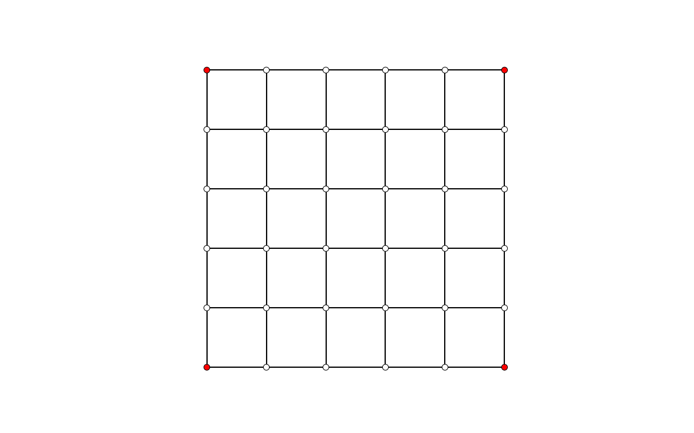

Mesh Dynamic Relaxation GIF

Use Dynamic Relaxation to find the equilibrium shape of a mesh. Save the relaxation process in an animated gif.
import os
import shutil
import compas
from compas.datastructures import Mesh
from compas_plotters import MeshPlotter
from compas.numerical import dr
from compas.utilities import gif_from_images
# File paths
HERE = os.path.dirname(__file__)
TEMPDIR = os.path.join(HERE, '_animation-files')
FILE_I = compas.get('faces.obj')
FILE_O = os.path.join(HERE, "animation.gif")
IMAGES = []
if os.path.isdir(TEMPDIR):
shutil.rmtree(TEMPDIR)
if not os.path.isdir(TEMPDIR):
os.mkdir(TEMPDIR)
# create a mesh from a sample file
# and update its default edge attributes
mesh = Mesh.from_obj(FILE_I)
mesh.update_default_edge_attributes(
qpre=1.0, fpre=0.0, lpre=0.0, l0=0.0, E=0.0, r=0.0)
# identify the corners of the mesh
corners = list(mesh.vertices_where({'vertex_degree': 2}))
# get numerical mesh data
vertices = mesh.vertices_attributes('xyz')
edges = list(mesh.edges())
fixed = corners
loads = [[0.0, 0.0, 0.0] for key in vertices]
qpre = mesh.edges_attribute('qpre')
fpre = mesh.edges_attribute('fpre')
lpre = mesh.edges_attribute('lpre')
linit = mesh.edges_attribute('l0')
E = mesh.edges_attribute('E')
radius = mesh.edges_attribute('r')
# make a plotter
# and draw the initial configuration
plotter = MeshPlotter(mesh, figsize=(8, 5), tight=True)
plotter.draw_vertices(facecolor={key: "ff0000" for key in corners})
plotter.draw_edges()
# save the initial configuarion to file
# add multiple copies to simulate a pause at the start of the DR process
imagepath = os.path.join(TEMPDIR, "plot_{}.png".format(0))
plotter.save(imagepath, dpi=150)
IMAGES.append(imagepath)
IMAGES.append(imagepath)
IMAGES.append(imagepath)
# define a callback for plotting every 5th iteration of the DR process
def save_image(k, xyz, crits, args):
if k == 0:
return
if k % 5 != 0:
return
for key, attr in mesh.vertices(True):
attr['x'] = xyz[key][0]
attr['y'] = xyz[key][1]
attr['z'] = xyz[key][2]
plotter.update_vertices()
plotter.update_edges()
imagepath = os.path.join(TEMPDIR, "plot_{}.png".format(k))
plotter.save(imagepath, dpi=150)
IMAGES.append(imagepath)
# run the DR
dr(vertices, edges, fixed, loads, qpre, fpre, lpre, linit, E, radius,
kmax=100, dt=1.0, tol1=1e-3, tol2=1e-6, c=0.1, callback=save_image)
# save the result to a GIF
gif_from_images(IMAGES, FILE_O, fps=5)